GS Ballistics
GS Ballistics is an Android app for ballistic calculation in long-range shooting. It calculates the elevation needed to hit a target at a given distance, from the bullet's data, the weapon, the optic and the atmospheric conditions. The calculation is performed by numerically integrating the equations of motion, not with a fixed coefficient or an approximate formula. This guide describes the app's functions in Chapters 1-8 and the calculation principles of the ballistic engine in Chapter 9.
Before a reliable elevation can be read, four values must be set, in the following order: the reticle's angular unit, the ammo in use, the atmospheric conditions and the target distance.
The first value to define is the angular unit of the reticle mounted on the weapon: MOA or MRAD. It is set in the optics profile (Optics list → active profile), together with the click value (for example 0.25 MOA or 0.1 MRAD) and, if known, the turret's total travel. Every elevation the app calculates is expressed in this unit.
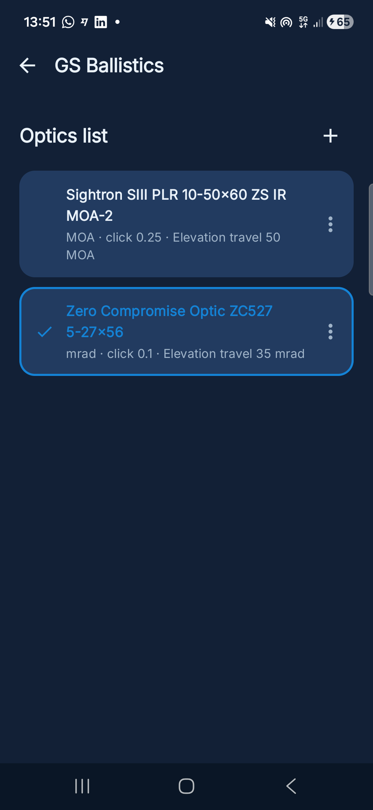
The elevation calculation depends on the ballistic coefficient (BC) of the bullet in use: without an ammo selected, or with an incorrect BC, the calculated value can't be trusted. Ammo is chosen from the bullet library or entered manually in the weapon profile, specifying caliber, weight, muzzle velocity and both the G1 and G7 ballistic coefficients. Where both are available, GS Ballistics defaults to the G7 model: the G7 table represents a long-ogive boat-tail projectile and is more accurate for the modern match bullets typically used in long-range shooting. The G1 model (flat-base projectile) remains preferable for bullets shaped closer to that reference, or when the manufacturer only publishes a G1 BC — in that case the drag model should be set to G1 in the weapon profile.
Air density and speed of sound, both used in the calculation, depend on temperature and atmospheric pressure: using values that don't match the real ones produces an elevation error that grows with distance. Temperature and pressure are set from the Settings screen and should be updated before every range session, based on the conditions measured in the field.
With the reticle, ammo and atmospheric conditions defined, the target distance is set from the dial on the Home screen. The elevation calculated for that distance appears immediately, in the unit defined in step 1.1. The distances offered on the dial are those of the active range, managed from Range list → Manage distances.
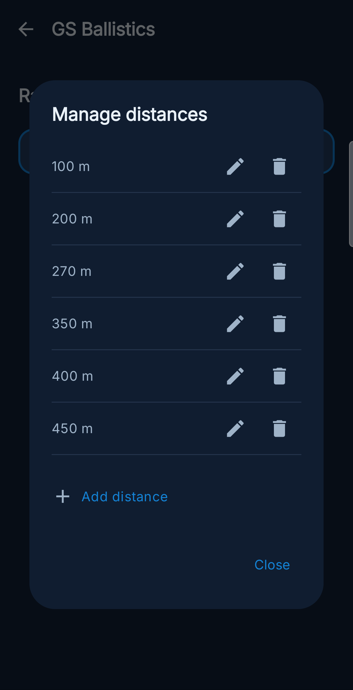
The Home screen shows the elevation to dial for the selected distance, calculated from the currently active ammo and optic. To change the distance, use the dial: the elevation value updates automatically.
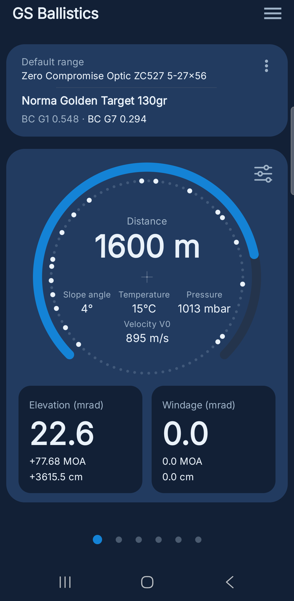
1 2 3 4 5 6The bullet library holds over 200 bullets with factory data from major manufacturers. Every weapon profile stores caliber, weight, muzzle velocity and the G1 and G7 ballistic coefficients. A profile can be created by selecting a bullet from the library — its data is pre-filled and can be edited — or by entering every value manually.
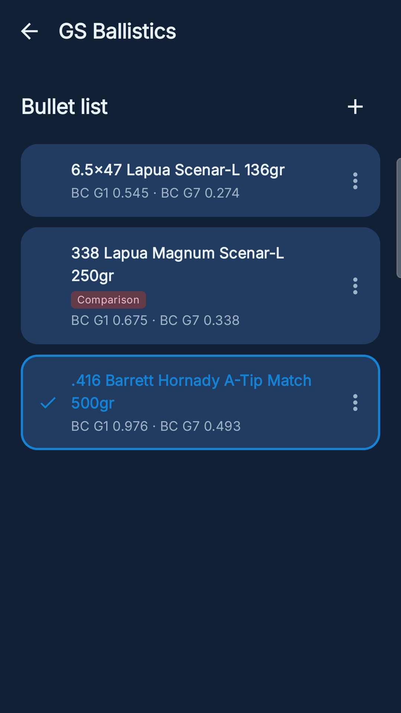
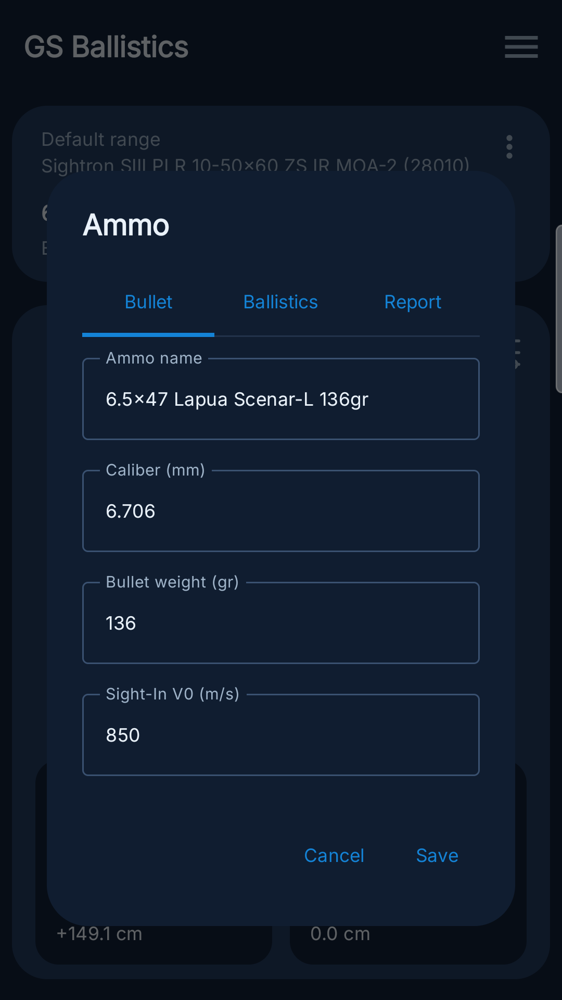
If a bullet is missing from the library, or the values shown look wrong, it can be reported directly from the Report tab of the ammo edit dialog: the report includes the data currently shown on that screen and an optional note field, and is sent as an email to the developer.
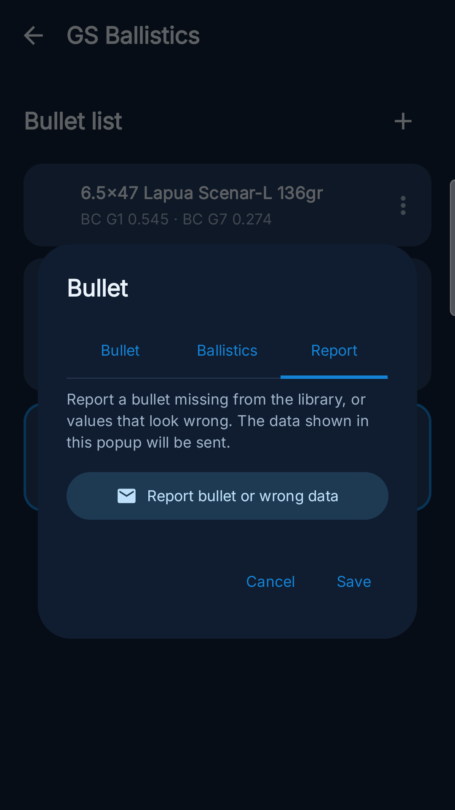
After a shot, the elevation actually verified can be logged for the distance and the weapon in use. The logged value is compared automatically against the calculated one and stays attached to that weapon/distance pair.
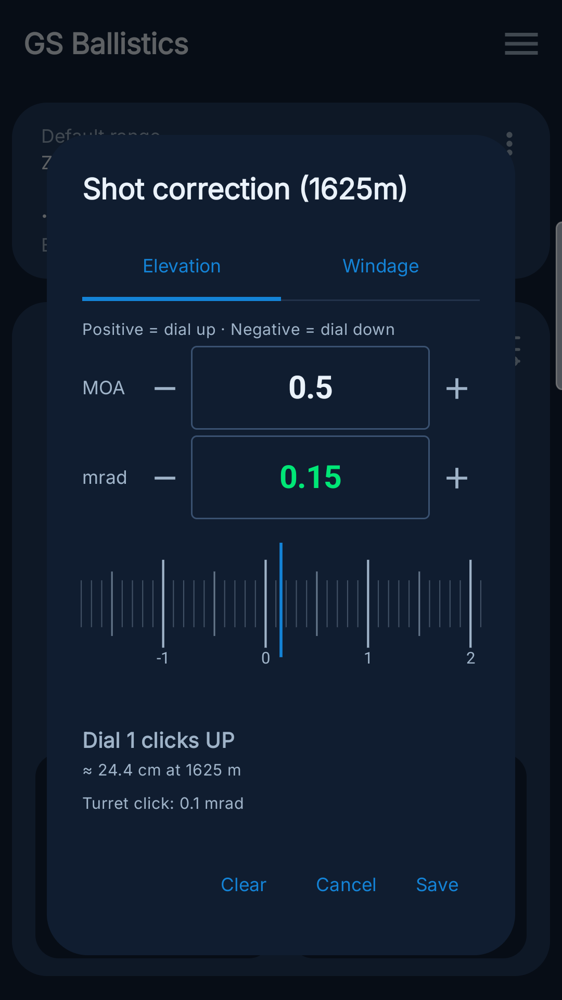
Once a range's distances have been entered, the app builds the corresponding ballistic table automatically: each row shows the calculated value, any real value logged on the range and the difference between the two.
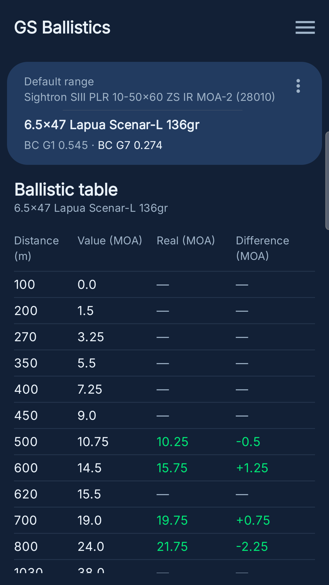
1 2 3 4The same table, plotted as a curve, shows where along the trajectory the real value starts to depart from the calculated one. A second ammo, set as a comparison, can be overlaid on the same chart.
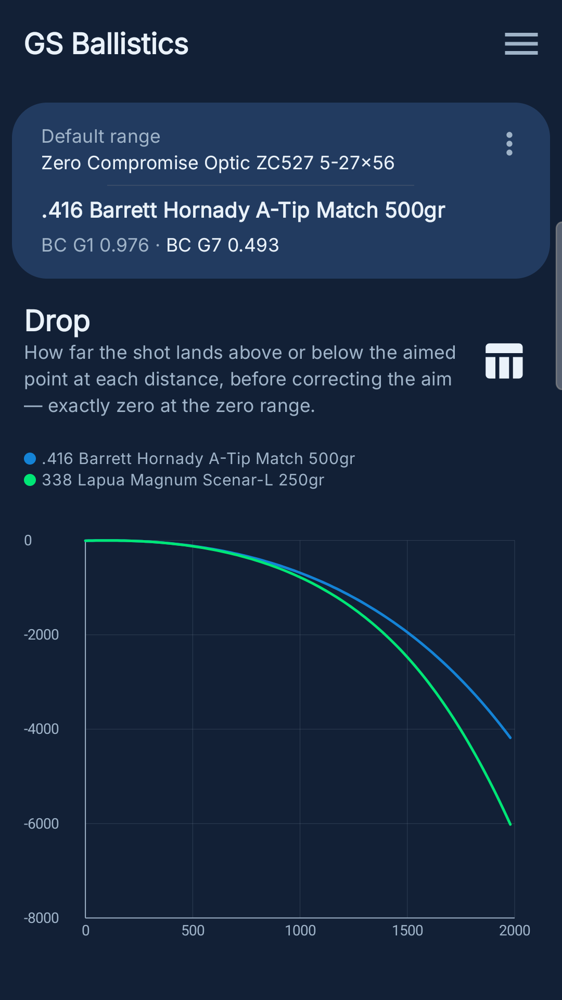
1 2 3The Settings screen collects theme, language, round-to-click and the preferred unit for every quantity (weight, length, speed, energy, pressure, temperature, angles).
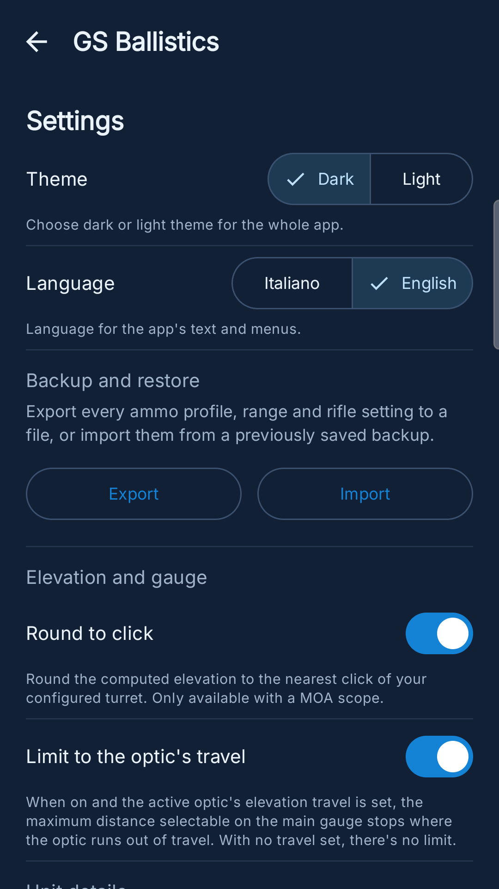
The "Backup and restore" section in Settings (or the "Export report" entry in the main menu) exports a single HTML file containing every weapon profile, range and rifle setting. The file is handed straight to Android's own share sheet: it can be saved to Drive, sent by email or WhatsApp, or simply saved among the device's files.
The exported file is both a readable report and a complete backup at once. Opened in any browser it shows the active weapon profile with its ballistic table and drop chart; every piece of data needed to restore the full configuration — including profiles not shown on screen — stays embedded in that same file, with no internet connection required. To restore it, on this device or another one, it's enough to import it from that same "Backup and restore" section.
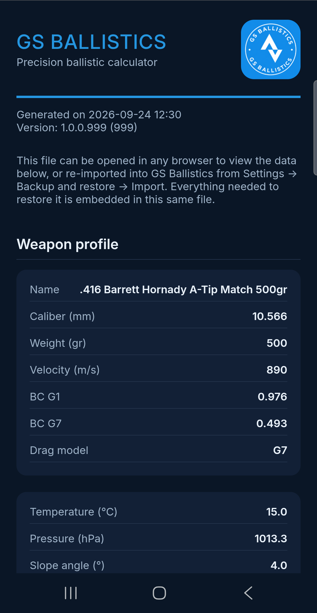
So far the app has been described from the outside, as whoever uses it sees it; it's worth a few more pages on what actually happens behind the number on screen, because understanding that also means understanding when to trust a calculated elevation and when it's worth verifying it on the range instead.
Start with the number every shooter already knows best: the ballistic coefficient. In short, a bullet's BC is the ratio between its sectional density — mass divided by the square of the diameter — and its form factor relative to a standard reference projectile: the more "efficient" the real bullet is at cutting through the air compared to that reference, the higher the BC and the lower the drag at a given speed. GS Ballistics doesn't just apply that number as a fixed coefficient: it uses the standard G1 (flat-base projectile, the historically dominant convention) and G7 (long-ogive boat-tail projectile, more representative of modern long-range match bullets) drag tables, both indexed by instantaneous Mach number — the same historical Ingalls/McCoy curve the leading ballistic solvers are built on.
Having the right table isn't enough if it then gets used with too simple a formula. Unlike analog slide-rule calculators or single-coefficient approximate formulas, the engine numerically integrates the equations of motion — air drag and gravity — step by step along the whole trajectory. At every step it recalculates velocity, Mach number and therefore the instantaneous drag coefficient from the G1/G7 table, instead of assuming from the start that the trajectory follows some already-known curve.
Then there's a value that enters the calculation before the trajectory itself does: the air the bullet has to travel through. Air density and speed of sound — which sets the Mach number the drag table is indexed on — are derived in real time from temperature and pressure via the ideal gas law, instead of always assuming standard atmosphere (15°C, 1013.25 hPa). It's also, in practice, one of the places generalist ballistic software trips up most often: entering barometric pressure where absolute pressure is expected, or the other way around, produces an elevation error that stops being negligible well before long range.
One thing is still worth clearing up, and it's probably the most misunderstood: the elevation shown in the app isn't the bullet's raw drop, but the angular correction needed relative to the zeroed line of sight. It depends, then, on the scope's height above the bore and on the chosen zero range too, not on the trajectory alone — which is exactly why two rifles firing the very same load, but with scopes mounted at different heights, need different elevation at the same distance. These values — zero range, line-of-sight height, twist rate and any mount offset — are set from the "Scope and rifle configuration" screen, shared by every weapon profile.
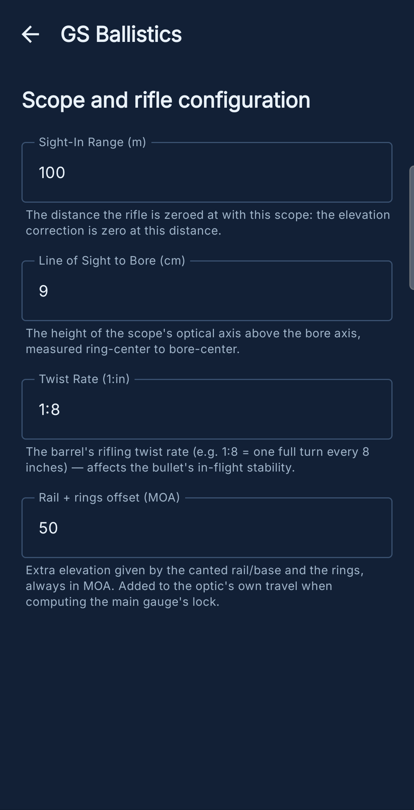
For anyone who wants to verify an elevation by hand, the "Elevation calculation" screen (reachable from the main menu) shows every intermediate step — drop at the zero range and at the target, where the line of sight sits, the conversion to mrad or MOA — with the actual numbers the engine is using at that moment, in the same order described in this chapter.
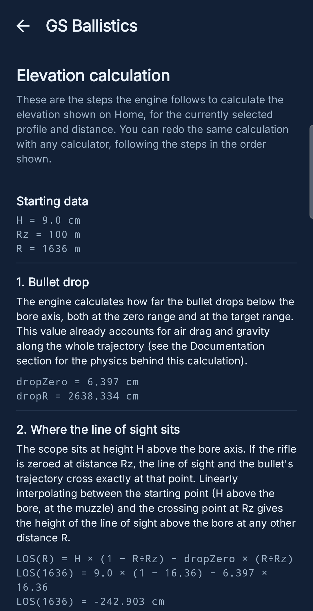